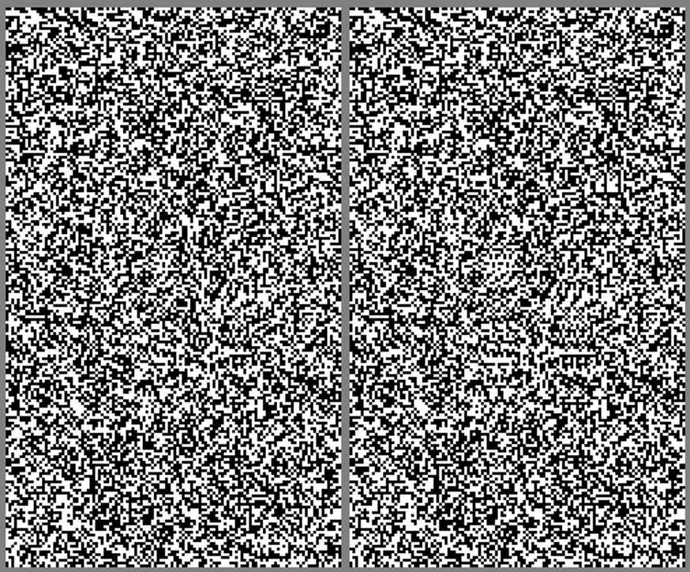
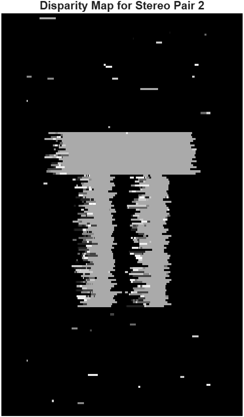
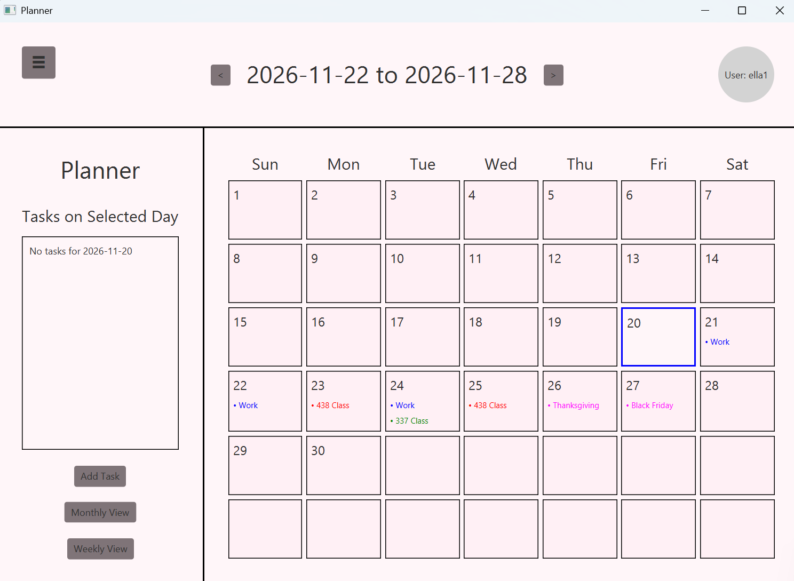
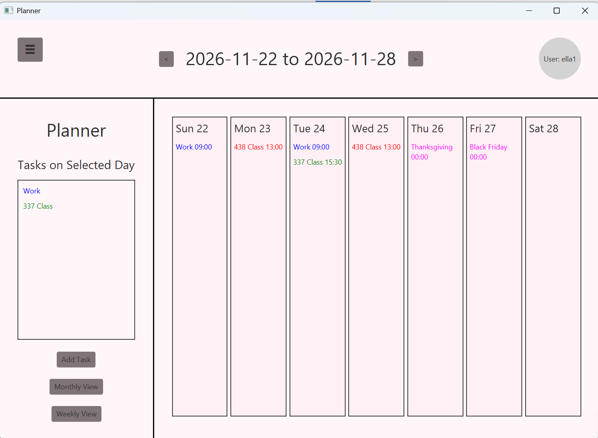

Computer Science | University of Arizona
Welcome to my website! I'm Ella Grenkoski, and I'm currently pursuing a Bachelor of Science in Computer Science with a minor in Applied Computing at the University of Arizona. Throughout my coursework, I've explored different areas of computer science and developed an interest in software development. Outside of academics, I enjoy playing video games, hiking, going to the gym, and spending time with my dog.


Description: I used MATLAB to implement a stereo matching algorithm to estimate depth from pairs of random dot stereogram images. The algorithm compares small sections of the images to find matching points and calculate their differences in position. The first image shows the original stereo pair, while the second shows the disparity map generated by the algorithm, revealing the shape of the Greek letter pi. The black background represents areas farther away, and the gray pi shape is closer to the camera.
Skills/Concepts Learned: MATLAB, image processing, stereo vision


Description: I worked with a team to develop an interactive planner using Java and JavaFX. The application allows users to create and manage tasks through monthly and weekly calendar views, customize their settings, and receive email reminders of upcoming tasks. I also developed the background music player, tested the application using JUnit, and fixed bugs to improve the application's functionality and reliability.
Skills/Concepts Learned: Java, JavaFX, agile development, JUnit testing
Description: For my compilers course, I worked on building a compiler for Luca, a Pascal-like programming language created by my professor. Using Java, I developed different parts of the compiler, including a lexer that breaks code into tokens, a parser that checks its structure, and a semantic analyzer that checks for errors. I also created an interpreter to execute programs and worked on generating and optimizing MIPS assembly code.
Skills/Concepts Learned: Java, compiler design, finite automata
Univeristy of Arizona
B.S. in Computer Science, Minor in Applied Computing